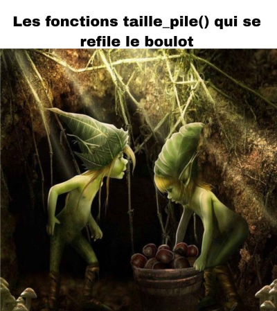

Listes - Paradigme fonctionnel
Attention
Ici, nous ne parlons pas du tout des listes python. Nous n'en utiliserons d'ailleurs pas.
Définition
Les listes sont une structure de données linéaire qui permet de stocker une séquence d'éléments. Il existe une multitude de manière de les implémenter. Nous en verrons 2.
Les listes sont un outil formidable pour faire ses premiers pas en récursivité. C'est aussi l'occasion de découvrir le paradigme fonctionnel, et aussi d'aller juste un peu plus loin dans le paradigme orienté objet.
Ici, nous allons créer des listes immuables, ce qui signifie qu'elles ne peuvent pas être modifiées une fois créées. Toute opération qui "modifie" une liste renvoie une nouvelle liste, tout en préservant l'ancienne.
Définition récursive
Nous travaillerons avec des listes où chaque élément est un entier.
Chaque liste peut être :
- vide
- Contenir un élément appelé la tête, suivi de la queue, qui est une autre liste.
Nous définissons une liste à l'aide de sa propre définition. Selon cette définition, nous travaillons sur une structure définie récursivement.
Implémentation en python
Nous utiliserons des tuples pour contenir une liste car les tuples sont immuables, ils collent bien au cadre de la programmation fonctionnelle.
Nous matérialiserons la liste vide par un tuple vide.
Une liste non vide sera un tuple contienant 2 éléments, la tête, ainsi que la queue.
Le tuple suivant représente une liste où la tête est 2, et la queue est une liste dont la tête est 3, suivie d'une liste ou la tete est 4, suivie elle-même de la liste vide.
(2, (3, (4, ())))
Traduction de notre définition en python:
type vide = tuple[()]
LISTE_VIDE: vide = ()
type liste = vide | tuple[int, liste]
videreprésente le vide modélisé par un tuple vide.listeest une structure récursive qui peut être soit vide, soit un 2-uplet: tête (int) et queue(liste).
Création et Accès aux Éléments
Création d'une Liste
Une fonction typique pour créer une nouvelle liste à partir d'un entier et d'une autre liste :
def creer(t: int, q: liste) -> liste:
return (t, q)
t: la tête (l'élément à ajouter).q: la queue (la liste suivante).
Accès aux Éléments
Les deux opérations d'accès principales sont : - Tête : obtenir le premier élément de la liste. - Queue : obtenir la sous-liste à partir du deuxième élément.
def tete(lst: liste) -> int:
assert len(lst) == 2, "Liste vide"
return lst[0]
def queue(lst: liste) -> liste:
assert len(lst) == 2, "Liste vide"
return lst[1]
Nous reviendrons sur ces fonctions car il se peut qu'on les modifie juste un peu en fin de parcours.
Attention
A partir de maintenant, nous n'utiliserons plus les tuples. Nous n'utiliserons que les fonctions que nous avons définies ainsi que la constante LISTE_VIDE.
Fonctions en lecture
Tester si une Liste est Vide
def est_vide(lst: liste) -> bool:
return lst == LISTE_VIDE
Calculer la Taille d'une Liste
def taille(lst: liste) -> int:
if est_vide(lst):
return 0
return 1 + taille(queue(lst))
Calculer la Somme des Éléments
def somme(lst: liste) -> int:
if est_vide(lst):
return 0
return tete(lst) + somme(queue(lst))
A vous
Ecrivez toutes les autres fonctions demandées. On réalisera une disjonction de cas au papier avant de coder.
Fonctions en création
Attention
Bien comprendre que les listes sont immuables. On ne peut pas les modifier. Par "Insérer", on entendra "Renvoyer une liste dans laquelle on a inséré".
Ajouter un Élément à la fin
def ajouter_fin(e: int, lst: liste) -> liste:
if est_vide(lst):
return LISTE_VIDE
else:
return creer(tete(lst), ajouter_fin(queue(lst)))
Si on reprend la métaphore des lutins.

Je suis un lutin-ajouteur.
- Si on me donne une liste vide et qu'on me dit d'y ajouter l'élément e, je renvoie une liste ne comportant que l'élément e
- Sinon, c'est qu'on me donne une liste avec une tete et une queue. Alors je créé une liste avec la même tête, et pour la queue, je la donne à un autre lutin ajouteur pour qu'il me la renvoie augmentée de e
A vous
Ecrivez toutes les autres fonctions demandées. On réalisera une disjonction de cas au papier avant de coder.